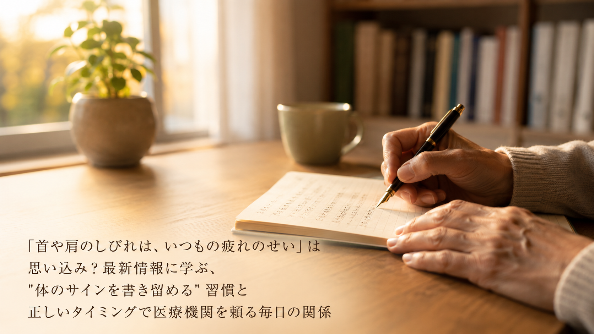

「ナッツは、袋のままつまむおやつ」は思い込み？最新情報に学ぶ、"料理に混ぜて食べる"習慣といつもの食卓を楽しみ続ける毎日の関係
ナッツは小腹がすいたときにつまむもの——そう決めていませんか。ある食品団体の発表から、くるみに体内で十分に作れないオメガ3脂肪酸などが含まれると紹介されていること、味噌だれや香草パン粉に混ぜ込むなど和食にも洋食にも合わせられる食べ方が提案されていることをご紹介します。

「伸びをするくらいでは、体は変わらない」は思い込み？最新情報に学ぶ、"20秒だけ上に伸ばす"習慣と同じ姿勢を続けすぎない毎日の関係
運動は、時間をつくってするもの——そう考えていませんか。生活用品を手がけるある企業の発表から、両手を上げて約20秒伸びるだけの「のび休み」という休憩習慣が提案されていること、長時間同じ姿勢でいることが厚生労働省の指針でも腰痛の発生要因のひとつとされていると説明されていることをご紹介します。

「体の回復ぐあいは、自分の感覚でわかる」は思い込み？最新情報に学ぶ、"つけているだけで残る記録"の習慣と自分のペースを見守る毎日の関係
体の調子は自分がいちばんよくわかっている——そう考えていませんか。ある医療財団と通信会社の発表から、指輪型のウェアラブル機器で歩数や睡眠、心拍などを続けて記録する実証実験が始まったこと、身につける機器は充電や操作の負担が「続けにくさ」につながる場合があると説明されていることをご紹介します。

「楽しみは、元気になってからとっておくもの」は思い込み？最新情報に学ぶ、"自分で調べて選ぶ"習慣とやりたいことを先送りしない毎日の関係
やりたいことは、体調が整ってからでいい——そう考えていませんか。あるインタビューメディアの発表から、高齢者医療に35年以上携わってきた精神科医が「いつまでも今の自分でいられるわけではない」と語っていること、医療や暮らしについて自ら情報を持ち、人任せにしないことの大切さを説いていることをご紹介します。

「気持ちは、しまっておくのが大人」は思い込み？最新情報に学ぶ、"心の動きを短い言葉にする"習慣と溜め込まずに過ごす毎日の関係
感情は表に出さずにしまっておくもの、と思っていませんか。ある日用品メーカーの発表から、「涙」をテーマにした短歌の募集に想定の約7倍となる44,705首が寄せられたこと、自分の感情を素直に出せる場が減っていると感じる人が63.8％にのぼると紹介されていることをご紹介します。

「運動が続かないのは、気持ちの問題」は思い込み？最新情報に学ぶ、"通える場を選び直す"習慣と体を動かし続ける毎日の関係
運動が続かないのは自分の意志が弱いせい、と思っていませんか。ある経営コンサルティング会社の発表から、国内ジムの月間退会率が約4〜5％とされること、やり方がわからないまま辞めてしまう例が多いこと、地域に「通う選択肢のない層」が残されているという指摘をご紹介します。

「健診の結果は、受け取ったら終わり」は思い込み？最新情報に学ぶ、"結果を自分の手元に置いておく"習慣と体の移り変わりに気づく毎日の関係
健康診断の結果は、封筒のまま引き出しにしまいっぱなしになっていませんか。労働安全衛生に関わるある企業の発表から、健診結果が保管されるだけで生かされにくい現状と、マイナポータルやPHRの普及で自分の健康情報を手元で確認できる環境が整いつつあることをご紹介します。

「減塩すると、料理は味気なくなる」は思い込み？最新情報に学ぶ、"塩を減らすよりコクを足す"習慣と食卓を楽しみ続ける毎日の関係
塩分を控えると料理はおいしくなくなる、と思っていませんか。牛乳・乳製品の普及に取り組むある一般社団法人の発表から、味噌や醤油に成分無調整牛乳を合わせてコクや旨味で食塩やだしを減らす「乳和食」と、おいしさを保ちながら塩分を適切にする「適塩」という考え方をご紹介します。

「車いすは、歩けなくなってから考えるもの」は思い込み？最新情報に学ぶ、"出かける手段を早めに知っておく"習慣と行きたい場所へ足を運び続ける毎日の関係
歩行を支える道具は、歩けなくなってから考えるものだと思っていませんか。千葉県のあるモビリティメーカーの発表から、電動車いす・介助のアシスト・歩行器の三役を一台で担う設計と、道路交通法上「歩行者」として扱われる移動範囲をご紹介。出かける手段を早めに知っておく習慣を考えます。

「非常食は、お腹がふくれれば十分」は思い込み？最新情報に学ぶ、"備えに一品足しておく"習慣といつもの食べ方を保ち続ける毎日の関係
備えてある非常食は、お腹がふくれれば十分だと思っていませんか。秋田県のある食品メーカーの発表から、避難生活では主食中心の食事になりやすいという指摘と、備蓄に栄養の視点を足しておく考え方をご紹介。防災の日を前に、いつもの食べ方を保つ備えを考えます。

「口のケアは歯を磨けば十分」は思い込み？最新情報に学ぶ、"舌にも目を向ける"習慣と食事をおいしく味わい続ける毎日の関係
口の中の手入れは、歯を磨けば足りると思っていませんか。舌ブラシを手がけるある企業の発表から、暑さのあとに口の中の環境が変わりやすい背景と、舌の表面にも目を向ける手入れの考え方をご紹介。食事をおいしく味わい続ける習慣について考えます。

「医療機関は具合が悪くなってから行くところ」は思い込み？最新情報に学ぶ、"元気なうちに顔を出しておく"習慣といざというとき慌てない毎日の関係
医療機関を、具合が悪くなってから行く場所と考えていませんか。京都のあるクリニックの発表から、元気なときにも地域の人が集まれる場をひらく取り組みと、その場で行われた救命体験の様子をご紹介。日ごろの備えとつながりについて考えます。

「休み明けのだるさは、そのうち抜ける」は思い込み？最新情報に学ぶ、"朝の起きる時刻をそろえる"習慣と夏の疲れを持ち越さない毎日の関係
夏の休み明けのだるさを、そのうち抜けるものと考えていませんか。ある睡眠関連グループの発表から、夏は生活リズムが変わりやすく睡眠の不足が積み重なりやすいことと、就寝前の画面を控える・毎朝同じ時刻に起きる・短い昼寝という3つの習慣をご紹介します。

「運動には道具と場所がいる」は思い込み？最新情報に学ぶ、"立ったついでにかかとを上げる"習慣と自分の脚で歩き続ける毎日の関係
運動を始めるには道具や場所が必要だと感じていませんか。あるスポーツ系WEBメディアの発表から、家でできる運動の動画が支持を集めている状況と、壁に手をついて行う「つま先立ち」の手順をご紹介。暮らしのなかで体を動かす考え方をお伝えします。

「毎食ちゃんと手作りしなければ」は思い込み？最新調査に学ぶ、"作るところと頼るところを分ける"習慣と台所に立ち続ける毎日の関係
毎日の食事を「手作りでなければ」と思い詰めていませんか。ある調査会社の発表から、手作りのおかずと惣菜・冷凍食品を同じ食卓に並べる家庭が6割半にのぼる実態をご紹介。台所に無理なく立ち続けるための考え方をお伝えします。

「家の中でつまずくのは、年のせい」は思い込み？最新情報に学ぶ、"暮らしの動線を見直す"習慣と住み慣れた家で過ごす毎日の関係
家の中でのつまずきやヒヤリを「年のせい」で片づける前に。ある住宅会社の発表から、段差をなくすだけでなく「移動の距離と順番」まで見直すという設計思想をご紹介。今の住まいにも当てはめられる考え方をお伝えします。

「検査で異常なしなら、あとは我慢するだけ」は思い込み？最新情報に学ぶ、"力を抜く時間をつくる"習慣と重だるさを持ち越さない毎日の関係
病院では異常なしと言われるのに続く「なんとなくの重だるさ」について、日々積み重なった身体の緊張という視点をある体幹ケアの会社の発表からご紹介。がんばって伸ばすより、まず力を抜く時間をつくるという考え方をお伝えします。

「紫外線対策は誰にでも同じだけ必要」は思い込み？最新情報に学ぶ、"自分がどれだけ浴びているかを知る"習慣と目をいたわる毎日の関係
紫外線と目の関係は「浴びたかどうか」ではなく「生涯でどれだけ浴びたか」という量で考える、というある眼科医院の発表をもとに、屋外で過ごす時間の長さに応じて備えの強さを変えるという考え方をご紹介します。

「気持ちが晴れないのは、気力が落ちたせい」は思い込み？最新情報に学ぶ、"自分の声を聴く時間をつくる"習慣と心穏やかに過ごす毎日の関係
長い休みのあとに感じる「なんとなく気持ちが晴れない」について、外に答えを探すのではなく自分への理解から整えるという考え方をもとに、一行日記や書き出しなど、日常に取り入れやすい"自分と対話する時間"の持ち方をご紹介します。

「運動を続けるには、まとまった時間が必要」は思い込み？最新情報に学ぶ、"自分の生活リズムに合わせる"習慣と体を動かすことが日常になる毎日の関係
24時間年中無休のフィットネスジムの国内会員数が120万人を超えたという発表をもとに、「決まった時間に行かなくてよい」仕組みが運動の継続を支えているという視点と、生活リズムに小さく組み込む工夫をご紹介します。

「物価高だから、食の質は諦めるしかない」は思い込み？最新調査に学ぶ、"かしこく栄養をえらぶ"習慣と食卓を楽しみ続ける毎日の関係
全国の20〜80代を対象にした食に関する意識調査をもとに、年齢が上がるほど「たんぱく質」「食物繊維」「カルシウム」を意識する傾向や、値ごろで栄養のある食材を上手に選ぶ"かしこく栄養をえらぶ"工夫をわかりやすくご紹介します。

「趣味を楽しんだあとの体のだるさは、歳のせい」は思い込み？最新情報に学ぶ、"帰宅後にリビングで整える"習慣と好きなことを楽しみ続ける毎日の関係
趣味やゴルフを楽しんだ翌日の体のだるさを片づけず、外出せずリビングで完結する体のいたわり方をわかりやすくご紹介します。

「首や肩のしびれは、いつもの疲れのせい」は思い込み？最新情報に学ぶ、"体のサインを書き留める"習慣と正しいタイミングで医療機関を頼る毎日の関係
公開医学講座の解説をもとに、首や肩の痛み・しびれのサインをどう受け止め、どのタイミングで医療機関に相談するとよいかをわかりやすくご紹介します。

「眠りの浅さは寝相が悪いせい」は思い込み？最新情報に学ぶ、"寝る姿勢で呼吸を整える"習慣と朝すっきり目覚める毎日の関係
睡眠中の呼吸に関する解説をもとに、仰向け・横向きそれぞれの寝る姿勢で呼吸をラクにする、日常で意識できる工夫をわかりやすくご紹介します。

「つまずきやすいのは年齢のせい」は思い込み？最新情報に学ぶ、"呼吸と姿勢で整える"習慣とつまずきにくい毎日の関係
体幹（インナーマッスル）に関する解説をもとに、呼吸や座り方、歩き方など日常の所作でやさしく体幹を意識する習慣をわかりやすくご紹介します。

「自律神経のケアは強く刺激するほど効く」は思い込み？最新情報に学ぶ、"1日5分やさしく整える"習慣と緊張をゆるめる毎日の関係
サロンで好評という"神経美容"の考え方をもとに、自宅で無理なく続けられる、やさしく体に触れる自律神経ケアの習慣をわかりやすくご紹介します。

「目の疲れやかすみは年齢のせい」は思い込み？最新情報に学ぶ、"食べる目のケア"習慣とすっきり見える毎日の関係
食品メーカーの新商品発表をもとに、毎日の食事から目の調子をサポートする栄養習慣の考え方をわかりやすくご紹介します。

「骨盤ケアは長時間締め続けるほどいい」は思い込み？最新情報に学ぶ、"10分だけ整える"習慣と無理なく続くセルフケアの関係
骨盤まわりのセルフケア用品に見られる「短時間で集中してケアする」という新しい考え方をもとに、無理なく続けられるセルフケアの視点をわかりやすくご紹介します。

「暑さ対策は涼しくするだけでいい」は思い込み？最新情報に学ぶ、"暑さに慣らす"習慣と夏を健やかに過ごす体づくりの関係
厚生労働省や気象庁も呼びかける「暑熱順化」という考え方をもとに、冷やすことだけに偏らない夏の体調管理の視点をわかりやすくご紹介します。

「体を柔らかくするにはストレッチしかない」は思い込み？最新の研究に学ぶ、"筋トレで整える"習慣としなやかな体をつくる毎日の関係
大学の研究グループによる最新の研究をもとに、筋肉の柔らかさと筋力を同時に育てる運動の考え方をわかりやすくご紹介します。

「心が疲れたら気合いで乗り切るしかない」は思い込み？最新情報に学ぶ、"自分を労わる"習慣と心のレジリエンスを育てる関係
心の専門家による解説をもとに、頑張りすぎたときのサインの気づき方や、日々の暮らしの中で心を労わる習慣、レジリエンスの育て方をご紹介します。

「体の変化には自分が一番早く気づく」は思い込み？最新の"におい科学"に学ぶ、これからの予防的な健康チェックの視点
におい科学の研究者による解説をもとに、体調や代謝のサインを見逃さないための、日々の生活習慣とセルフチェックの考え方をわかりやすくご紹介します。

「日焼け対策は日焼け止めだけで十分」は思い込み？最新情報に学ぶ、"ナッツで内側から整える"習慣と夏のインナーケアの関係
ナッツ研究団体の解説をもとに、紫外線や冷房による乾燥が気になる夏に、食事の面から体の内側を整えるインナーケアの考え方をわかりやすくご紹介します。

「エアコンを強く効かせるほど涼しく眠れる」は思い込み？最新情報に学ぶ、"夜の熱を逃がす"習慣とぐっすり眠れる夏の関係
寝具メーカーの解説をもとに、夏の夜にエアコンだけに頼らず、身体にこもる熱を上手に逃がして眠るための一般的な工夫をわかりやすくご紹介します。

「殺虫剤で駆除すれば安心」は思い込み？最新情報に学ぶ、"寝具を干して整える"習慣と住まいのダニ対策の関係
ダニ研究の専門家による解説をもとに、現代の住まいでダニが増えやすい理由と、換気・掃除・寝具の手入れといった日常の習慣でアレルゲンを減らす工夫をわかりやすくご紹介します。

「ふくらはぎのケアは特別な時間を作らないとできない」は思い込み？最新情報に学ぶ、"ながらケア"習慣と一日の巡りを整える毎日の関係
生活家電ブランドの提案をきっかけに、中高年の方にも役立つ、日常のすき間時間に取り入れる「ながらケア」習慣と体の巡りを整えるヒントをわかりやすくご紹介します。

「疲れた日はとにかく安静にするしかない」は思い込み？最新情報に学ぶ、"アクティブレスト"習慣と自律神経を整える毎日の関係
スポーツドクターの解説をきっかけに、中高年の方にも役立つ、疲れた日にあえて軽く体を動かす「アクティブレスト」習慣と自律神経・血流を整えるヒントをわかりやすくご紹介します。

「筋トレさえすれば歩く力は保てる」は思い込み？最新情報に学ぶ、"筋肉をほぐす"習慣と歩行寿命の関係
内科クリニックの健康講座情報をきっかけに、中高年の方にも役立つ、歩く力を支える筋肉をほぐす習慣と「歩行寿命」の考え方をわかりやすくご紹介します。

「そうめんは麺つゆと薬味だけでいい」は思い込み？最新情報に学ぶ、"具だくさんそうめん"習慣と夏の栄養バランスの関係
医療機関が発信するそうめんのアレンジレシピ情報をきっかけに、中高年の方にも役立つ、野菜やたんぱく質を組み合わせる栄養バランス習慣のヒントをわかりやすくご紹介します。

「着圧ソックスはおしゃれと両立しない」は思い込み？最新情報に学ぶ、"足元を心地よく整える"習慣と前向きに歩き続ける毎日の関係
利用者の声から生まれた足元ケアアイテムの新色展開をきっかけに、中高年の方にも役立つ、おしゃれと両立しながら続けられる足元ケア習慣のヒントをわかりやすくご紹介します。

「涼しくすればぐっすり眠れる」は思い込み？最新情報に学ぶ、"朝晩のリズム"習慣と自律神経を整える快眠の関係
湿気や気圧の変化が自律神経に影響するという睡眠専門家の情報をきっかけに、中高年の方にも役立つ、朝晩の生活リズムを整える快眠習慣のヒントをわかりやすくご紹介します。

「座りっぱなしは仕方ない」は思い込み？最新情報に学ぶ、"すきま股関節ストレッチ"習慣と歩く力の関係
座りっぱなしによる股関節のこわばりについての情報をきっかけに、中高年の方にも役立つ、すきま時間でできる股関節ストレッチ習慣のヒントをわかりやすくご紹介します。

「歯は痛みが出てから受診すればいい」は思い込み？最新情報に学ぶ、"気軽な歯科相談"習慣と全身の健康の関係
歯やお口の悩みに歯科医師が無料で応じる相談会の取り組みをきっかけに、中高年の方にも役立つ、気軽に相談する歯科受診習慣と全身の健康との関わりをわかりやすくご紹介します。

「たんぱく質はプロテインでとるもの」は思い込み？最新情報に学ぶ、"いつもの飲み物"に一工夫するたんぱく質習慣と栄養バランスの関係
プロテインのような特別な準備をしなくても、いつもの麦茶に一工夫するだけでたんぱく質を意識できる——そんな提案をきっかけに、中高年の方にも役立つ栄養習慣のヒントをわかりやすくご紹介します。

「セルフケアは特別な時間を作ってこそ」は思い込み？最新情報に学ぶ、"ながらケア"習慣とふくらはぎケアの関係
テレビを見ながらでも使えるコードレス対応の「ふくらはぎケア機」の提案をきっかけに、中高年の方にも役立つ、すき間時間を活用した"ながらケア"習慣のヒントをわかりやすくご紹介します。

「昼寝はサボりの証拠」は思い込み？最新情報に学ぶ、"パワーナップ"習慣と自律神経を整える休息の関係
職場での短時間の仮眠「パワーナップ」が話題に——展示会での取り組みをきっかけに、中高年の方にも役立つ、自律神経を整える休息習慣のヒントをわかりやすくご紹介します。

「食欲がない夏は麺類だけでいい」は思い込み？最新情報に学ぶ、たんぱく質と夏の筋肉量を守る食習慣の関係
夏バテで食欲が落ちる時期こそ、たんぱく質が不足しがちに——内科クリニックが企画した料理教室をきっかけに、中高年の方にも役立つ夏の食習慣のヒントをわかりやすくご紹介します。

「筋トレは若い人のためのもの」は思い込み？最新情報に学ぶ、道具いらずの"プランク習慣"と体幹づくりの関係
自宅で気軽にできる体幹トレーニング「プランク」を紹介する動画シリーズをきっかけに、中高年の方にも役立つ体幹づくりのヒントをわかりやすくご紹介します。

「冷房で涼めば安心」は本当？最新情報に学ぶ、夏本番の"暑さに慣れる"習慣と体調管理の関係
冷やすだけの夏対策で本当に十分？「暑熱順化」をテーマにした啓発キャンペーンをきっかけに、中高年の方にも役立つ夏の体調管理のヒントをわかりやすくご紹介します。

「猫背は年齢のせい」は本当？最新情報に学ぶ、夏の薄着シーズンと姿勢ケア習慣の関係
薄着の季節に気になる姿勢の乱れ——体幹や骨盤を整えるサポーター製品の発表をきっかけに、日々の姿勢と付き合うヒントをわかりやすくご紹介します。

「スプレーくらい平気」は思い込み？最新情報に学ぶ、梅雨の防水スプレーと正しい使い方の関係
梅雨に欠かせない防水スプレーも、使い方次第で思いがけず体調を崩すことがある——医療機関の解説から、正しい使い方のポイントをわかりやすくご紹介します。

「元気でいるには激しい運動が必要」は本当？最新情報に学ぶ、呼吸を整える『ヨガ的習慣』と健やかな加齢の関係
健やかに歳を重ねるために必要なのは激しい運動よりも呼吸や姿勢を整える時間かもしれない——国際ヨガの日を記念したイベントの内容から、日常に取り入れやすいヒントをご紹介します。

「夏バテは気力の問題」は本当？最新情報に学ぶ、酷暑期の『酸味欲求』と菌活習慣の関係
夏に酸っぱいものがほしくなるのは体からのサインかもしれない——免疫バテのメカニズムと発酵の知恵を紹介したセミナー内容から、夏の食卓のヒントをわかりやすくご紹介します。

「病院に行くほどじゃない」は気のせい？最新情報に学ぶ、ちょっとした不調のセルフチェックと地域の健康相談の関係
「病院に行くほどではない」と見過ごしがちな小さな体の変化に気づくヒントを、地域に出向いて健康相談を行う病院の取り組みからわかりやすくご紹介します。

「昼寝はサボりの証拠」は本当？最新情報に学ぶ、短い仮眠（パワーナップ）と自律神経の関係
短い仮眠は怠けているわけではない——働く場で広がる「パワーナップ」の取り組みから、日中のコンディションを整えるヒントをわかりやすくご紹介します。

「体の不調は自分が一番よくわかる」は本当？最新情報に学ぶ、『におい科学』の最前線と定期健診の関係
体は日々小さなサインを発している——"におい科学"の最前線を紹介する公開セミナーから、定期健診を見直すきっかけをわかりやすくご紹介します。

「暑さは気合いで乗り切るもの」は本当？最新情報に学ぶ、猛暑どきの『身につける暑さ対策』と体調管理の関係
我慢するだけが暑さ対策ではない——身につけて涼をとる工夫を実際に体験できる催しの発表から、猛暑どきの体調管理のヒントをわかりやすくご紹介します。

「筋トレは特別な道具がないと始められない」は本当？最新情報に学ぶ、自宅でできる「スクワット」習慣と足腰の力の関係
ジムに通わなくても、自宅で器具なしに取り組めるスクワット——運動習慣を続けるハードルを下げる工夫を、スポーツ・フィットネスメディアの発信からわかりやすくご紹介します。

「よく噛んで食べなさい」はただの躾？最新情報に学ぶ、噛むことと自律神経・腸内環境の関係
噛むことが胃腸の負担を軽くするだけでなく、自律神経や腸内環境、気分の安定にまで関わっている可能性がある——内科クリニックの解説をわかりやすくご紹介します。

「体の重だるさは気のせい」は本当？最新情報に学ぶ、梅雨どきに増える『気象病』と自律神経の関係
雨の日の頭の重さやだるさは、気のせいでもサボりでもない——心療内科クリニックが解説する「気象病」の仕組みをわかりやすくご紹介します。

「弱音を吐かないのが偉い」は本当？最新情報に学ぶ、梅雨どきの心の疲れと『レジリエンス』の関係
頑張り屋な人ほど気づきにくい心の疲れのサインと、回復力＝レジリエンスを育てる視点を、最新の情報からわかりやすくご紹介します。

「セルフケアは特別な時間がないと続けられない」は本当？最新情報に学ぶ、すき間時間と『ながらケア』習慣の関係
テレビを見ながら、読書をしながらでも続けられる——梅雨で在宅時間が増える時期に注目された「ながらケア」という考え方をわかりやすくご紹介します。

「冷凍すれば安心」は本当？内視鏡医の解説に学ぶ、梅雨から夏に多い食中毒対策の落とし穴
鶏肉の加熱不足や冷蔵庫の詰め込みすぎなど、よかれと思ってやってしまう食中毒対策の見落とし——内視鏡医による解説が示す視点をわかりやすくご紹介します。

「足腰の衰えは年齢のせい」は本当？最新情報に学ぶ、歩く力を支える筋肉と転倒予防の関係
長時間座る生活が続くと、歩く力を支える筋肉が硬くなりやすい——医療機関による解説講演が示す視点をわかりやすくご紹介します。

「枕は高さが合えば大丈夫」は本当？最新情報に学ぶ、寝姿勢と首・肩こりの関係
枕選びを高さだけで判断すると、首から肩までの支えのバランスが崩れたままになりやすい——整形外科医監修の解説記事が示す視点をわかりやすくご紹介します。

「疲れた時はじっと休むのが一番」は本当？最新情報に学ぶ、血流とアクティブレストの関係
夜更かしや座りっぱなしによる疲労は、横になって休むだけでは取れにくいことがある——スポーツ医科学の現場の「アクティブレスト」という視点をわかりやすくご紹介します。

「腰や膝の不調は年のせい」は本当？最新レポートに学ぶ、股関節と体の土台の関係
座りっぱなしで硬くなった股関節が、腰や膝への負担に関わっている可能性がある——最新レポートが示す視点をわかりやすくご紹介します。

「体が温まれば副交感神経も上がる」は本当？最新レポートに学ぶ、呼吸と体内環境の関係
体表が温まることと、呼吸が深くなって自律神経が整うことは同じではない——その視点を最新レポートからわかりやすくご紹介します。

「胃腸の不調は食事のせい」は本当？最新レポートに学ぶ、胃腸と体内環境の関係
胃腸の粘膜が持つ"再生力"は、酸素供給・自律神経・睡眠中の呼吸といった体内環境の影響を受けるという視点を、最新レポートからわかりやすくご紹介します。

「濃いサプリほど効く」は本当？最新レポートに学ぶ、栄養と体内環境の関係
サプリ市場1.2兆円時代でも健康不安が減らない理由——成分だけでなく呼吸・睡眠という体内環境に着目した最新レポートを紹介します。

「血流が良くなれば健康になる」は本当？最新レポートに学ぶ、健康の土台づくり
体表の血流や温度を上げることと、自律神経が整うことは同じではない——最新レポートが示す「健康の上流」について、わかりやすく解説します。
今後も健康・予防医療に関する話題を順次追加してまいります。